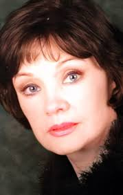

Իննա Ալաբինա
Կենսագրություն
Իննա Ալաբինան ծնվել է 1939 թվականի հուլիսի 25-ին Մոսկվայում։ Երիտասարդ տարիքից երազել է թատրոնի մասին։ 1966 թվականին ավարտելով Բ. Շչուկինի անվան թատերական ուսումնարանը՝ նա միացավ Վախթանգովի թատերախմբին, որտեղ էլ աշխատեց մինչև կյանքի վերջը։
Նա ճանաչված էր իր տրավեստի դերերով, և տարիներ շարունակ հանդես է եկել խորհրդային և ռուսական բեմերում՝ աշխատելով ռեժիսորների՝ Գորբանի, Կապլանյանի, Սիմոնովի և այլոց հետ։
Իննան նկարահանվել է նաև ֆիլմերում՝ առավել հայտնի դերերը կատարելով «Եռանկյունի» (1967) ֆիլմում՝ Լյուբայի դերում, «Տիկնայք և հուսարներ» (1976)՝ Զուզյայի դերում, ինչպես նաև «Դայակ է պետք» (2005) ու «Հայրիկի դուստրերը» (2009) հեռուստասերիալներում։
Նա վախճանվել է 2024 թվականի հունիսի 2-ին՝ 84 տարեկանում։